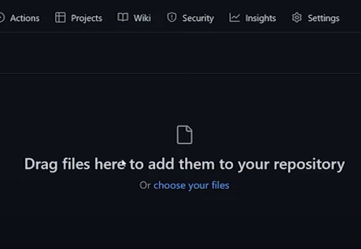

O Github é um site onde você pode adicionar projetos de programação, como por exemplo sites.
Pode parecer algo de outro mundo, mas, na realidade, é bem mais simples do que parece!
O Github é um site onde você pode adicionar projetos de programação, como por exemplo sites.
Pode parecer algo de outro mundo, mas, na realidade, é bem mais simples do que parece!
1 - Faça Login no GitHub.
2 - Crie um novo repositório colocando o nome que desejar e escolha se ele será público ou privado.

3 - Ao criar um repositório, aparecerá várias informações na tela, clique em "uploading an existing file".
4 - Logo em seguida, o site nos mostrará uma tela que nos diz para arrastar e adicionar os arquivos ao repositório.
5 - E então arraste todos os arquivos de seu site e espere eles baixarem no repositório.
6 - Clique no botão "commit changes" e espere o processamento.
7- Volte a tela inicial e clique em configurações, e abra a partição "Pages".
8 - Selecione a opção "Branch" e escolha o "Main" e depois "root" e clique em "Save", e é só esperar o seu site subir para o Github!
9- E pronto! Ao reiniciar a página, seu site estará disponível no GitHub.
Dica: Alguns arquivos podem demorar mais para serem enviados ao Github, isso depende do peso do arquivo.